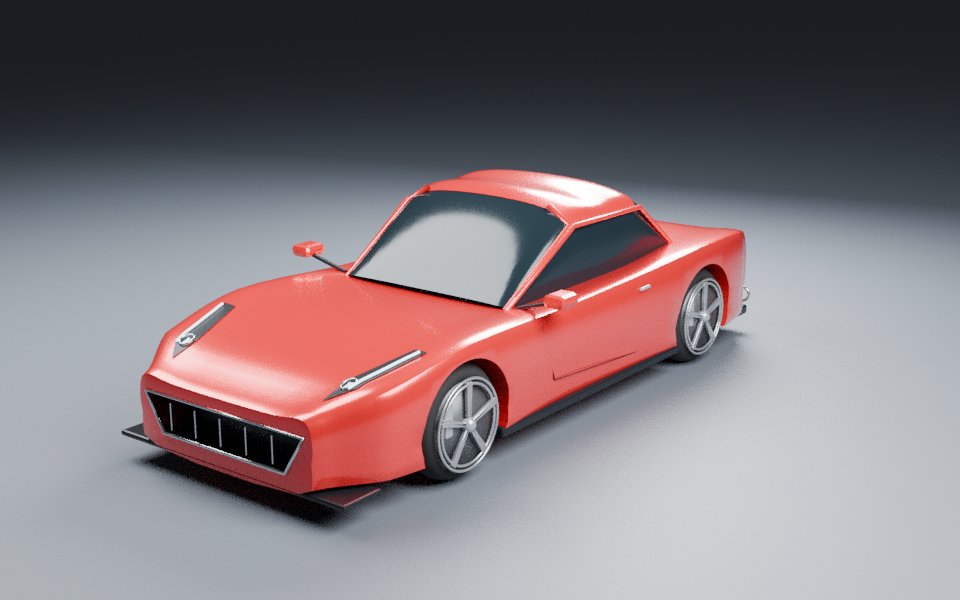
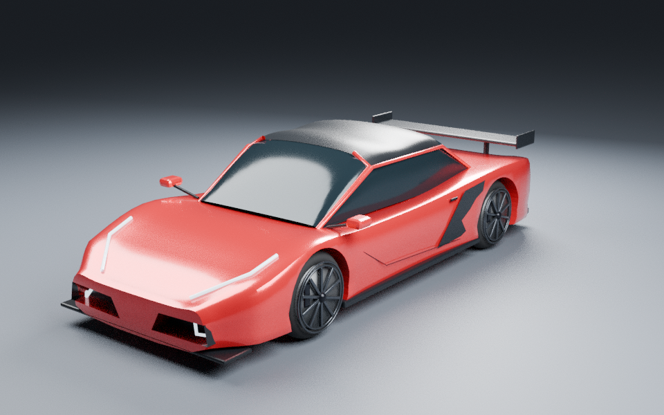
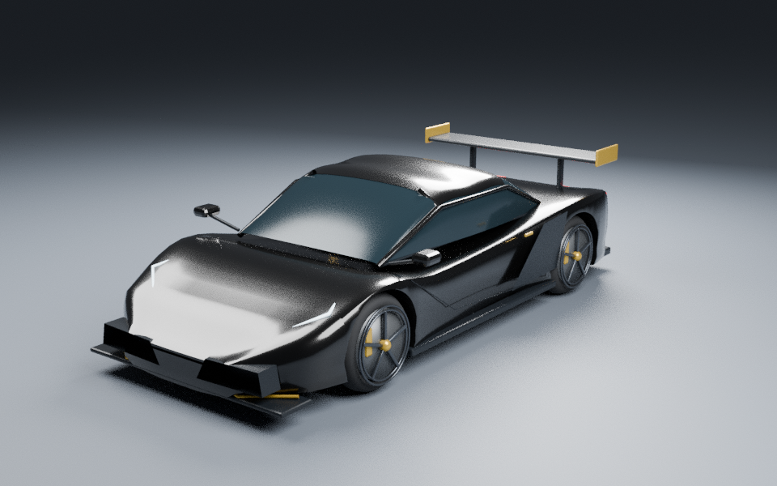
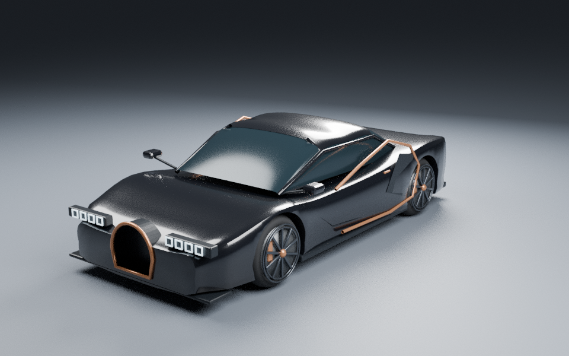
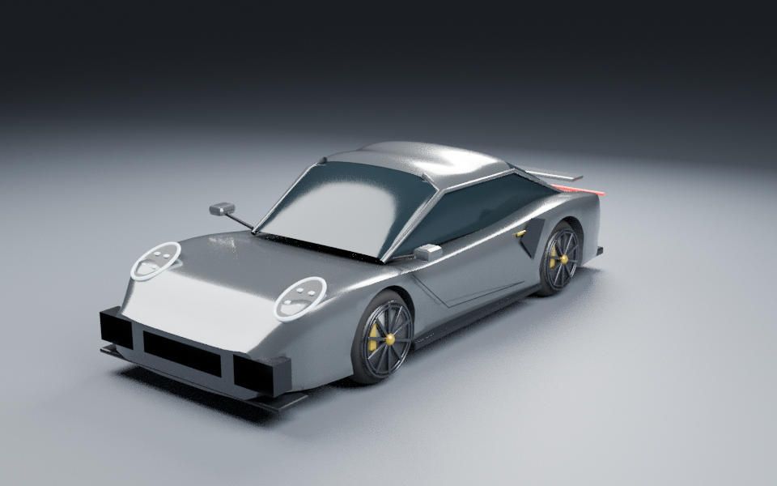
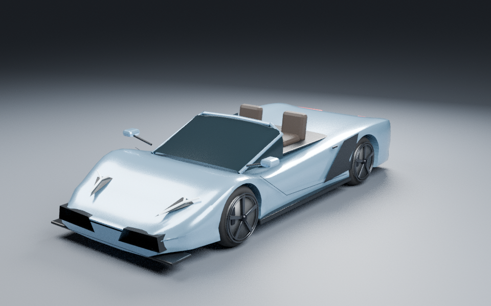
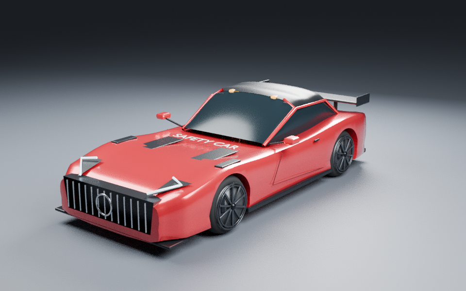

Tercer pase de techos, acristalamiento y faros del Ferrari. Renders de los siete GLB exportados, con iluminación y cámara comunes. Las formas siguen en revisión.







Pendientes: fidelidad fina, ópticas, interiores, decoración y prueba en navegador. 60 FPS sin verificar. Producción sin cambios.